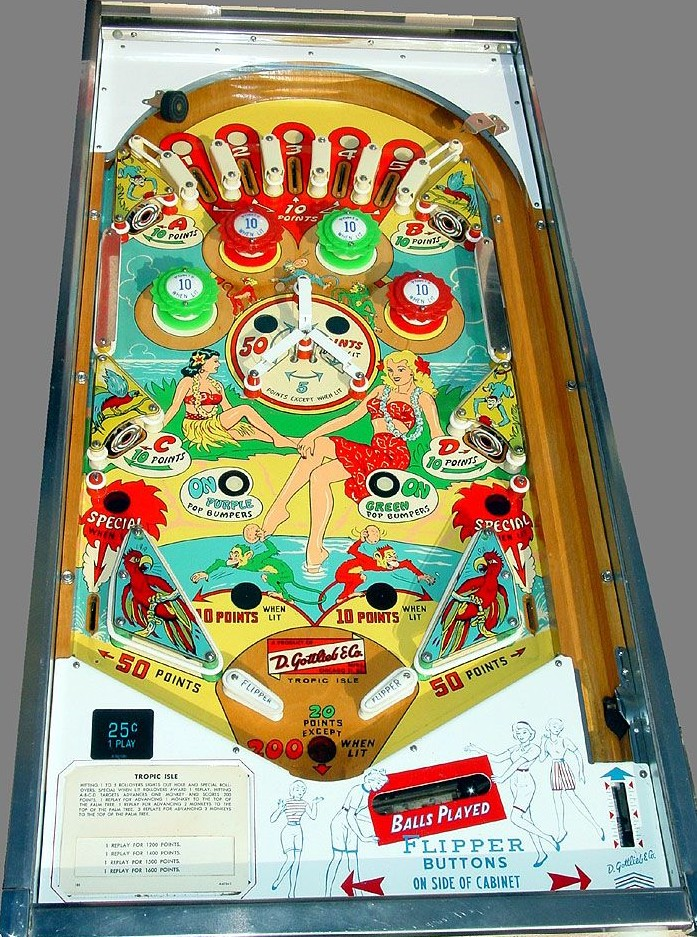

These two games have identical playfields and rules. Moon Shot is a copy of Tropic Isle produced by Bally when they were first re-entering the pinball industry after making bingo machines for several years. New legislation going into place at the end of 1962 prevented Bally from distributing bingo machines across state lanes, but Gottlieb's legal team worked with legislators to have a written clause exempting Gottlieb machines from the new rules. Moon Shot was a way for Bally to get one back on Gottlieb for conspiring against the competition, and is not to be confused with Moon Shot (Chicago Coin, 1969).
The top lanes are numbered 1-2-3-4-5, and all are lit at the start of the game. Making a lit top lane unlights it. Top lanes score 10 points whether lit or not. Making all 5 top lanes in one game lights the out lanes for Special and lights the out hole to score 200 points at the end of the ball instead of 20. Since there are no extra balls on this game, the only way to have these bonuses lit before the final ball of the game is to have nudging/pop bumper luck earn you multiple top lanes on trip to the top of the table.
The four standup targets around the game are labelled A (top left), B (top right), C (bottom left), and D (bottom right). These targets always score 10 points. All A-B-C-D targets are lit at the start of the game, and hitting a target unlights it. (The "light" for these targets is underneath the plastic behind the target, rather than a playfield insert.) Completing A-B-C-D advances one monkey (on Tropic Isle) or one rocket (on Moon Shot) on the backglass. This is a carryover award: there are three monkeys/rockets advanced in sequence. Advancing the first monkey/rocket to the top awards 1 Special; advancing the second awards 2 Specials; advancing the third awards 3 Specials and resets the sequence. Specials can only be set to award free games, no points or extra balls.
The On Purple and On Green Pop Bumpers rollover buttons qualify those respective bumpers. (On Moon Shot, the Purple and Green bumpers are respectively Green and Yellow instead.) When a bumper is qualified, both bumpers of that colour will be lit alternately based on 1-point switch hits. Pop bumpers score 1 point or 10 when lit. Making any of the three rollunder gates in the triangular center structure will unlight all bumpers. The rollunder gates score 5 points or 50 when lit, and are lit intermittently based on 10-point switch hits. Watch closely for a ball that triggers one of the lower two gates at low speed and falls toward the horizontal center of the table, as this has a high risk of a center drain.
Out lanes score 50 points. Slingshots score 1 point or 10 when lit; the left slingshot is lit whenever the green pop bumpers are also lit, and the right slingshot is lit alongside the purple pop bumpers. Out lanes can be lit for Special by completing the 1-2-3-4-5 top lanes. Any drained ball scores an end of ball bonus of 20 points, or 200 if 1-2-3-4-5 is completed. There is no extra ball feature. Tilt ends game.
The below picture of Tropic Isle's playfield was taken from the Internet Pinball Database, where it was originally provided by Raphael Lankar.
